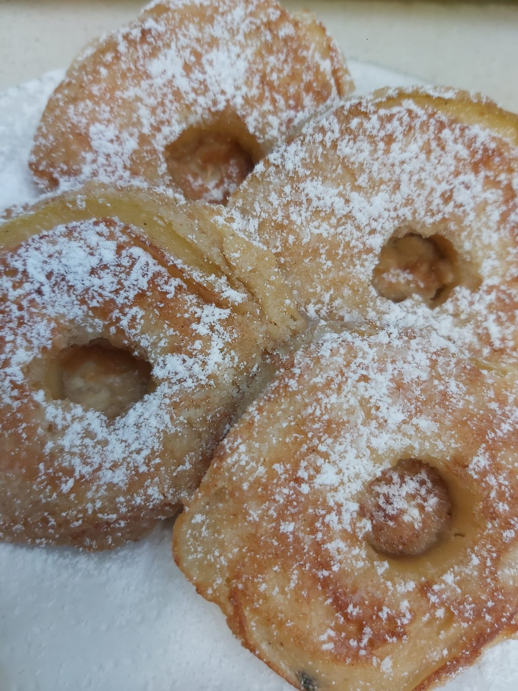

Apple donuts
Description
A simple yet delicious recipe for anyone who's looking for a healthy desert.
These doughnuts are great for a healthy twist on doughnuts.
Great and easy to make, Takes about 15 minutes to make!
Ingredients
(for two servings or 8 pieces)
- 2 medium apples
- 3 tablespoons maple syrup
- ¼ teaspoon of cinnamon
- 1 Egg
- 1 tablespoon of white cheese 5% fat
- 1 tablespoon of peanut butter
- ½ teaspoon of baking powder
Steps
The Apple Base
- Slice a medium sweet apple not peeled into 4 slices about 1 cm thick
- Remove the seeds so that a hole remains in the center.
- Put the maple and cinnamon in a pan and fry over low heat until slightly thickened.
- Add the apple slices and fry until caramelized.
- Put them on a cooling plate at room temperature.
The Donut Batter
- Mix the egg, white cheese, peanut butter and baking powder.
- Dip the apples in the batter with a fork and shake off excess.
- Fry in a pan (with oil spray) until golden on both sides.
- Using a spoon, open the hole if it is clogged and dust with a little powdered sugar.